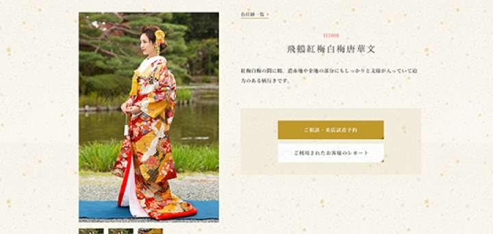
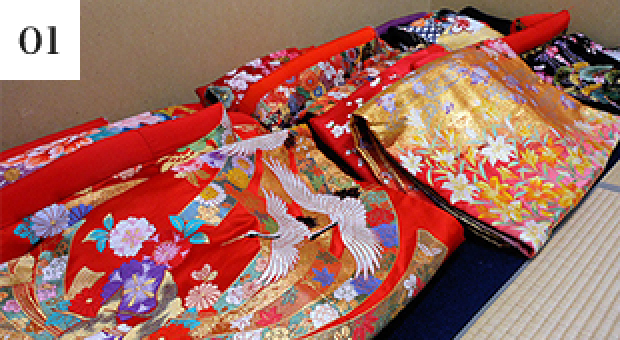
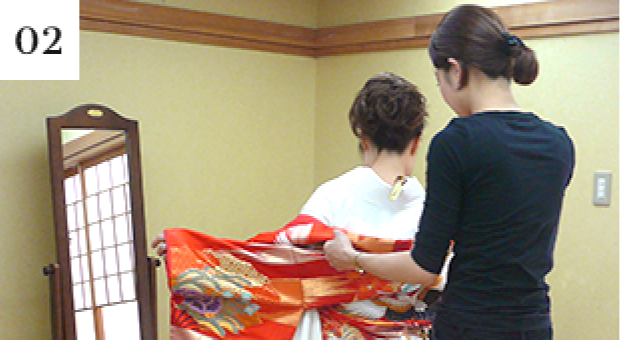
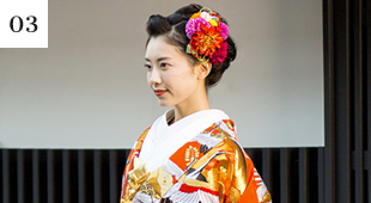
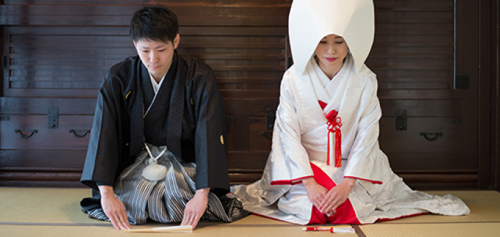

ご利用の流れ
衣装を選ぶ

当サイトにて、ご試着を希望される衣装をお選びください。「京 和装 WEDDING 華結び」は京都でもトップクラスの衣装点数を誇り、古典からモダン柄、ブランドものなど幅広い品揃え。リーズナブルでありながら上質な衣装を多数取り揃えております。
ご来店・来店予約
フォームか、お電話にてご試着の予約をお願いします。追ってスタッフよりお客様へ直接ご連絡を差し上げ、ご来館日の相談をさせて頂きます。希望の衣装が決まっていらっしゃらなくても、是非お越しください。
ご試着・お衣装選び
京都の雰囲気が漂う京町家（華結び店舗）にて、お好きな衣装をゆっくりご試着いただけます。お客様の好みをお伺いしながら大切なお衣装選びのお手伝いを致します。ご来店された時にご契約の必要はございませんので、お気軽にお越しくださいませ。
-

カウンセリング後、サイトから選んだ打掛以外にも数着ご覧いただきます。豪華な打掛に皆さんうっとりされます。
-

掛下を着て衣装を羽織り、本番の雰囲気に。簡易的にですが実際にご試着いただきますので、胸元が開いたお洋服でお越しいただくとイメージが湧きやすくなります。
-

スタッフのアドバイスの元、顔写りのいいものや身長に合ったものを何着か試着。楽しい時間ですね。写真撮影も可能です。
申し込み〜衣装発送
ご契約はご来店の際だけでなく、後日ご検討の上お返事いただいても結構です。ご契約はメールやお電話でも承っております。衣装の発送や返送についての詳細は、華結びのスタッフが会場の担当者様に直接ご連絡して打ち合わせを致します。お衣装の出荷日までにお衣装についてのご変更や追加、気になる事などがあればお気軽にお問い合わせください。
お衣装ご利用当日

お客様からご指定いただいた場所へご使用日の前々日〜前日に到着するように手配致します。荷物の到着確認もスタッフが行いますのでご安心ください。お客様が大切な日にお召しになるお衣装は、スタッフ一同心を込めてメンテナンスを行い大切に梱包してお送りしております。思い出に残る素晴らしい一日をお過ごしください。
お衣装ご利用に関するご注意
- ご契約前に衣装持ち込みについてお客様ご自身で会場へご連絡いただき、了解を取っていただきます様お願い申し上げます。また、お脱ぎになった衣装の片付けと梱包もお客様自身でご手配下さいませ。衣装持ち込みに関するトラブルや、会場様ご指定の持ち込み料金等の発生に関しては、当店では責任を負いかねますので充分ご注意下さいませ。
- お衣装は着付け用品を含め当社指定の一式にてご用意をしております。万が一、着付けをされる方からのご指定がある場合は事前にご相談下さいませ。
- お衣装代金には「往復送料・基本クリーニング料」が含まれております。通常の着用汚れについては基本クリーニング料にてメンテナンスをしておりますが、食べこぼしやお化粧汚れなど汚れや傷みが著しい場合、別途メンテナンス料をご請求差し上げる場合がございます。予めご了承下さいませ。